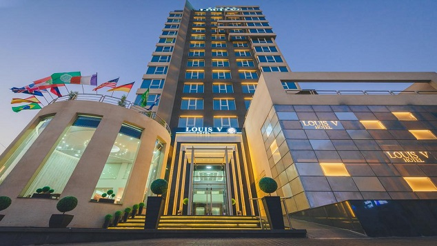
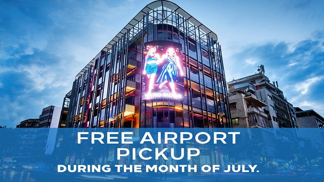
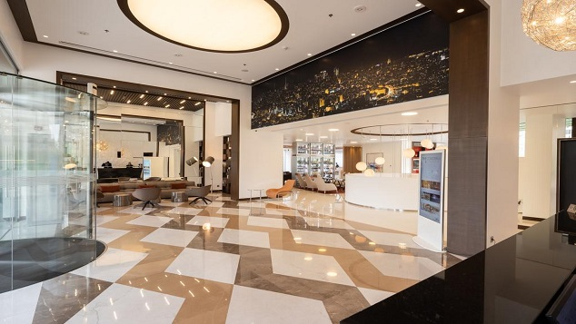
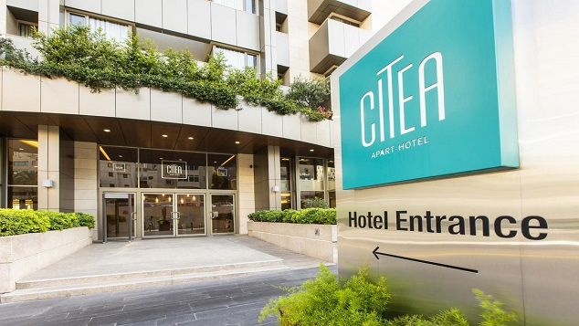

Beirut

Beirut is Lebanon's seat of government and plays a central role in the Lebanese economy,
with most banks and corporations based in its Central District, Badaro, Rue Verdun, Hamra,
Ryad el Soloh street, and Achrafieh. Following the destructive Lebanese Civil War,
Beirut's cultural landscape underwent major reconstruction. Identified and graded for accountancy,
advertising, banking, finance and law, Beirut is ranked as a Beta World City by the Globalization and World Cities Research Network.
Beirut was named the top place to visit by The New York Times in 2009, and as one of the ten liveliest cities in the world by Lonely Planet in the same year. According to a 2010 study by the American global consulting firm Mercer comparing high-end items such as upscale residential areas and entertainment venues, Beirut was ranked as the 4th most expensive city in the Middle East and 15th among the Upper Middle Income Countries included in the survey. Beirut came in first place regionally and 10th place internationally in a 2010 study by "EuroCost International" about the rental markets for high quality housing. The 2011 MasterCard Index revealed that Beirut had the second-highest visitor spending levels in the Middle East and Africa, totalling $6.5 billion. Beirut was chosen in 2012 by Condé Nast Traveller as the best city in the Middle East. In 2013, Condé Nast Traveller ranked Beirut in the top 20 best cities in the world. On 7 December 2014, Beirut was selected to be among the New 7 Wonders of Cities, along with Doha, Durban, La Paz, Havana, Kuala Lumpur and Vigan. The campaign was held by New 7 Wonders. In 2016, Yahoo listed Beirut as the best international city for food. Travel and Leisure ranked Beirut in the top 15 World's best cities. It was voted the must-visit city for the year 2019 by World Tourists.
Beirut has a hot-summer Mediterranean climate (Köppen: Csa) characterised by mild days and nights, as its coastal location allows temperatures to be moderated by the sea. Autumn and spring are warm, winter is mild and rainy. Summer is hot and can be virtually rainless and very dry although it can get very muggy, especially in August. The prevailing wind during the afternoon and evening is from the west (onshore, blowing in from the Mediterranean); at night it reverses to offshore, blowing from the land out to sea. The average annual rainfall is 825 millimetres (32.5 in), with the large majority of it falling from October - April. Much of the autumn and spring rain falls in heavy downpours on a limited number of days, but in winter it is spread more evenly over a large number of days. Summer receives very little rainfall, if any. Snow is rare, except in the mountainous eastern suburbs, where snowfall occurs due to the region's high altitudes. Hail (which can often be heavy) occurs a few times per year, mostly during winter.
5 of the best hotels in Beirut
(WORLD TELESCOPE) — In Beirut, you're never stuck for something to do, see, eat or drink--
no matter what time of the night or day it is.
But even the most energetic travelers need somewhere to take a breather.
In a destination packed with more hotels than you could visit in a lifetime, finding the best isn't easy.
But these five are among the best the city has to offer when you stay here:
1. Citea Apart Hotel Opens in new window

Set in Beirut and with Gemayzeh Street (Rue Gouraud) reachable within 1.3 km,
Monot Suites offers express check-in and check-out, rooms, a fitness centre,
free WiFi and a shared lounge. This was a great little find.
The suite is very comfy, with the space very cleverly used so that
there is a small kitchen with a hob, fridge, kettle and microwave,
a lounge and large bathroom as well as a very comfy bed and loads of storage space.
There is access to a small fitness room and a little pool.
It is an awesome and lively location with plenty of great restaurants and bars nearby.
There is no restaurant in the hotel but plenty a stone's throw away,
as an added bonus a really great breakfast is brought to the suite if you order it the night before.
You have a choice between lebanese style or continental, both of which are plentiful.
2. The Key Beirut Opens in new window

Situated 11 km from Gemayzeh Street (Rue Gouraud),
Louis V Hotel Beirut offers 5-star accommodation in Beirut
and has a fitness centre, a bar and a shared lounge.
Rooms were extremely clean, very classy, showers are amazing
3. Loft 29 Residence Opens in new window

Situated in Beirut,
Loft 29 Residence provides accommodation with private balconies.
All rooms boast a kitchenette and a private bathroom. Great location,
really pleasant and clean rooms,
but the thing that makes this such a good place to stay are the staff.
All of the people are incredibly helpful
and generous with their time and advice.
Thanks for making our visit to Beirut that much better.
4. Louis V Hotel Beirut Opens in new window

THE KEY Beirut is a centrally located four-star deluxe ApartHotel
offering intelligently designed rooms and apartments for short
and long stay guests.It's location makes it well placed for business...
the staff were amazingly friendly and they upgraded me to the 1bedroom apartment!!!
5. Monot Boutique Hotel Beirut

Strategically nestled in the heart of Ashrafieh,
minutes away from the airport
and in close proximity to the capital’s most famous landmarks,
including ABC mall, Hotel Dieu Hospital, Sassine Square,...
The way that the receptionists welcome us
specialy Aseel Haider she was so friendly & helpful.
The hotel was so clean & modern